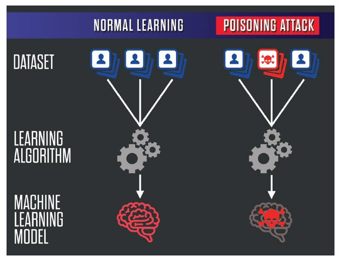

Risks of Machine Learning:
Although so much time is dedicated to the development and planning phase of a supervised machine learning (SML) system, there are some things that are not accounted for, which could lead to fatal risks in the long run after the SML system has been implemented. An example of a risk post-implementation is algorithmic bias, which is where the machine makes biased predictions on subjects it is testing against (Sun, et al., 2018). This problem is generally caused by insufficient training data and hinders the results, meaning that the information produced from the machine could be unreliable, causing the company to lose money, as they have to spend more time training the algorithm so that it is no longer biased.
This is especially relevant for the SML systems which are implemented in transport or health care, as they would require large quantities of data to be accurate. What makes this worse is that “big data” is generally used as training data solely due to the accuracy that it produces, and given that the data is exponentially growing with time, this means that a sizable team of experts is needed to label this data before being used (Cohen, 2020, May 18). In turn, this skyrockets the costs needed in order to implement SML systems and causes many to stray away from the idea of using them.

Additionally, SML systems are also vulnerable to “poisoning attacks”, which is when someone with malicious intent intentionally inputs invalid or modified training data to manipulate the results produced by the SML system (Jagielski et al. 2018). The effects of this could be devastating, especially in the healthcare sector, where a fast and accurate diagnosis could mean the difference between life and death. This idea of implementing SML in a healthcare sector is evident in “Identifying probable post-traumatic stress disorder: applying supervised machine learning to data from a UK military cohort”, by Leightley et al.(2018).
They
state that “early identification of probable PTSD can lead to early intervention and treatment”. In this
case, the predictive performance is required to be accurate and efficient in order to properly detect PTSD
within the military cohort, where misdiagnosis can lead to ill-suited treatment, and therefore improperly
treating the disorder.
The fact that SML systems are vulnerable to such attacks is one of the reasons
why
some people dismiss the idea of SML being widely used in the near future. However, this does not dissolve
the fact that SML could prove to be useful, as it holds the potential to bring down the $10,000 billion
dollar worldwide labour costs (Wu & Zhao, 2017), given there is adequate security and precautions taken
before implementation to ensure the integrity of the system regardless of the costs it may incur.